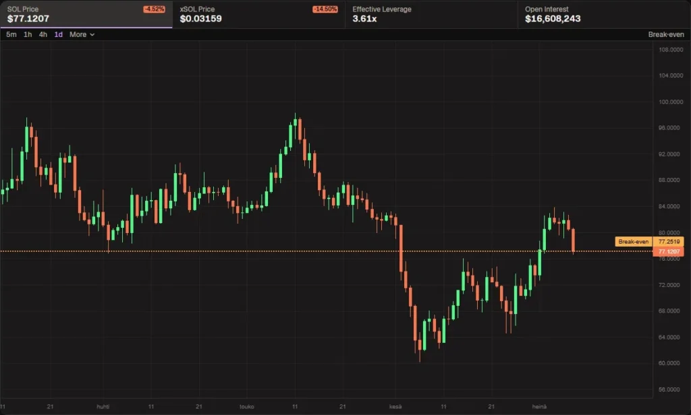
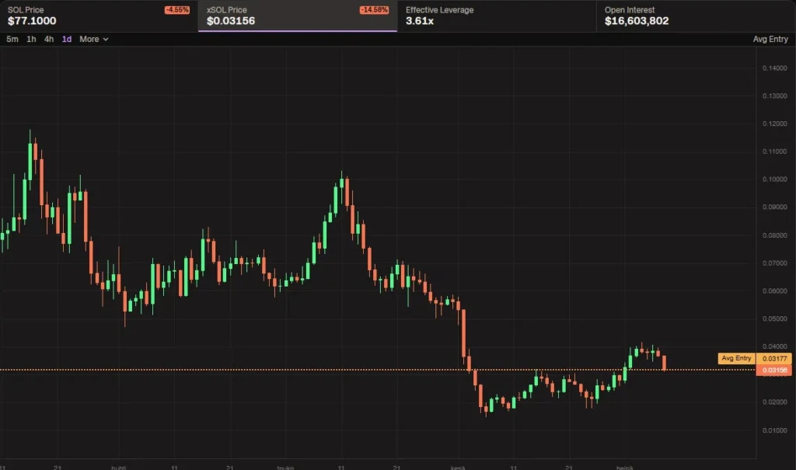

Kryptossa tapahtuu ilmiö jota useimmat eivät ymmärrä ennen kuin se on jo maksanut heille: tokeni laskee kymmenissä prosenteissa samana päivänä vaikka kukaan ei ole myynyt sitä. Hinta putoaa, kaupankäyntivolyymi on lähes nolla, ostopuolella ei liiku mitään – mutta kurssi on silti miinuksella. Tämä ei ole sattumaa eikä manipulaatiota, se on likvideettimekaniikka joka koskee kymmeniä tuhansia kryptoprojekteja. Kun ymmärrät miten se toimii, tokenien hinnanmuutokset alkavat näyttää täysin erilaiselta.


Mitä nämä kaksi kaaviota kertovat
Ensimmäinen kaavio näyttää Solanan eli SOL:n hinnan dollareissa huhtikuusta heinäkuuhun. Toinen kaavio näyttää xSOL:n hinnan samalta ajanjaksolta. xSOL on HYLO-protokollan luoma vivutettu Solana-tokeni, jonka vipukerroin on tällä hetkellä 3.61. Kaavioja vertaillessa huomaa välittömästi saman kuvion: sama nousu toukokuussa, sama romahdus kesäkuussa jolloin SOL kävi noin 62 dollarissa, sama palautuminen heinäkuussa 77–80 dollarin tienoille. xSOL:n kaavio on kuin SOL:n kaavio skaalattuna: muoto on identtinen, liikkeet ovat suurempia.
SOL:n päivämuutos oli noin miinus 4.5 prosenttia sillä hetkellä kun kaaviot otettiin, ja xSOL laski samana päivänä 14.5 prosenttia. Tämä on se 3.61-kertainen vipu käytännössä: 4.5 prosenttia kertaa 3.61 tekee noin 16 prosenttia, ja toteutunut liike osui lähelle tätä. Sama logiikka toimii nousuna: kun SOL nousee kymmenen prosenttia, xSOL nousee noin 36 prosenttia.
Miksi tokeni liikkuu vaikka kukaan ei treidaa sitä
Tässä on se ydinasia joka yllättää useimmat. Jos omistat jonkin Solana-ekosysteemin tokenin, sen dollarihinta muodostuu kaavasta TOKEN_USD = TOKEN_SOL × SOL_USD. Tokenin dollarihinta on siis sen Solana-suhdehinta kerrottuna Solanan dollarihinnalla. Jos kukaan ei käy kauppaa TOKEN/SOL-parilla ja se suhde pysyy ennallaan, mutta SOL laskee kymmenen prosenttia, niin TOKEN laskee myös kymmenen prosenttia dollareissa, vaikka tokeniin itsessään ei ole koskettu lainkaan.
Automaattiset markkinatakaajat eli AMM:t – kuten DEX-pörssit kuten Raydium tai Orca Solanassa – toimivat constant product -kaavalla: poolin kahden tokenin tulo x × y pysyy vakiona k. Kun SOL:n arvo nousee ulkopuolisilla markkinoilla, arbitraasibotit tasapainottavat poolin välittömästi, mikä siirtää hintasuhteita vaikka yksikään käyttäjä ei olisi avannut kaupankäyntinäkymää. Mekaniikka pyörii taustalla vuorokauden ympäri ilman taukoja.
Konkreettinen esimerkki selventää tämän. Poolissa on 1 000 SOL ja 100 000 TOKEN, ja SOL:n hinta on 80 dollaria. TOKEN maksaa poolissa 0.001 SOL eli 0.08 dollaria. Seuraavana päivänä SOL nousee 96 dollariin – 20 prosentin nousu. Pool ei tiedä tästä mitään, sen sisäinen SOL/TOKEN-suhde ei ole muuttunut. Mutta ulkomaailmassa TOKEN on edelleen kaupan 0.08 dollarilla, vaikka "oikea" hinta SOL:n nousun jälkeen pitäisi olla korkeampi. Arbitraasibotti huomaa hinnan epäsuhdan ja ostaa halpaa TOKENia poolista maksamalla SOL:ia sisään, kunnes poolin hintasuhde vastaa jälleen ulkomaailman markkinahintaa. Poolin SOL-määrä kasvaa, TOKEN-määrä pienenee ja tasapainohinta nousee – ilman yhtäkään tavallista käyttäjäkauppaa.
Tämä selittää tilanteet joita saatat olla nähnyt: ostat tokenin, projektin uutiset ovat hyviä, yhteisö on aktiivinen ja kehitys etenee, mutta hinta laskee silti. SOL tai ETH on laskenut, ja kaikki sen ekosysteemin tokenit ovat seuranneet perässä automaattisesti. Nousevassa markkinassa sama toimii kääntäen – tokenisi voi nousta 50 prosenttia ilman, että projekti itse on tehnyt mitään uutta, koska päätokeni vain vetää kaikki muut ylöspäin.
Tuhansia tokeneita, sama logiikka
xSOL on ääriesimerkki koska suhde on suunniteltu ja kolminkertaiseksi vivutettu. Sama peruslogiikka koskee kuitenkin kymmeniä tuhansia muita tokeneita joiden likvideetti on sidottu päätokeniin. Solana-ekosysteemin pelitokenit, DeFi-protokollat, likviditeettitokenit ja staking-palkkiotokenit käyvät kauppaa pääosin SOL-paria vastaan, joten niiden dollarihinta heiluu SOL:n mukana riippumatta siitä mitä projektin omassa kehityksessä tapahtuu. Ethereum-ekosysteemissä sama pätee ETH-pareihin.
Tämä selittää myös ilmiön nimeltä altcoin-season: kun Bitcoin, ETH tai SOL nousee voimakkaasti, kaikki ekosysteemin tokenit nousevat samaan aikaan, koska ne kelluvat päätokenin mukana. Päätokenin laskiessa sama tapahtuu toiseen suuntaan. Projekti voi olla täydellisessä kunnossa ja silti tokenin kurssi laskee 40 prosenttia, koska markkinasykli on kääntynyt.
Kryptomarkkinoilla toimivalle sijoittajalle Bitcoin ja Ethereum eivät siis ole vain kaksi omaisuuserää muiden joukossa – ne ovat pohja jonka päälle kaikki muu rakentuu. Kun arvioit sijoituksesi tuottoa, on syytä erottaa toisistaan se mitä päätokeni on tuottanut ja se mitä projekti itsessään on tuottanut sen päälle. Tokenisi dollareissa laskettu tuotto voi olla positiivinen vaikka projekti olisi oikeasti menettänyt arvoaan SOL-termeissä mitattuna – ja vastaavasti toisinpäin.
Vipuvaikutus – mitä 3.61-kertainen kerroin tarkoittaa arjessa
HYLO:n xSOL tarjoaa Solana-altistuksen vivulla, ja 3.61-kertainen kerroin moninkertaistaa jokaisen Solanan prosenttiliikkeen. Kaaviosta näkyy tämä selvästi: SOL laski alimmillaan noin 62 dollariin kesäkuussa, joka on noin 37 prosentin lasku huhtikuun noin 98 dollarin huipusta. xSOL puolestaan laski samassa ajassa 0.10 dollarista alle 0.02 dollariin, eli noin 80 prosenttia. Vipu toimi molempiin suuntiin, ja palautuminen heinäkuussa on ollut SOL:ia huomattavasti voimakkaampi.
Toteutunut vipu ei pysy vakiona – se vaihtelee poolien tasapainon ja protokollan uudelleentasausten mukaan. Kun 10 prosentin SOL-noususta tulee noin 36 prosentin xSOL-nousu, ja vastaava lasku moninkertaistuu samalla tavoin, on tärkeä ymmärtää ettei tässä tuotteessa ole futuurikaupalle tyypillistä likvidaatioriskiä – et voi saada likvidaatiokutsua kuten marginaalikaupassa. Pitkässä juoksussa vivutetuissa tokeneissa on kuitenkin ns. volatility decay eli arvon rapautuminen: jos SOL sahailee voimakkaasti edestakaisin ja palaa lopulta lähtöpisteeseen, xSOL voi silti päätyä lähtötasoa alemmaksi pelkästään vivun ja tasapainottamisen vuoksi. xSOL soveltuu parhaiten direktionaaliseen näkemykseen, ei passiiviseen pitkäaikaiseen holdaukseen.
MINT-oikeus – punainen lippu vai protokollan rakenne
Jos tarkistat xSOL:n analyysityökaluilla kuten Rugcheck tai Bubblemaps, näet että MINT authority on aktiivisena. Normaalisti tämä on varoitusmerkki: se tarkoittaa, että kehittäjä voi luoda lisää tokeneita milloin tahansa, laimentaa kaikkien osuuden ja romahduttaa hinnan. Roskaprojekteissa MINT authority on yksi yleisimmistä huijausvälineistä.
xSOL:ssa MINT authority on protokollan ydintoiminto, ei riski. Kun ostat xSOL:ia, protokolla mintaa tokenit sinulle ostovaiheessa. Kun myyt, ne poltetaan pois kierrosta. Kokonaismäärä heijastaa aina avointen positioiden määrää – ei enemmän eikä vähemmän. Sama rakenne on kaikissa liquid staking -tokeneissa kuten Lido:n stETH:ssä ja muissa vastaavissa protokollatokeneissa, joissa minttaus ja poltto ovat se varsinainen mekanismi.
Ratkaiseva kysymys on: onko minttaamiselle protokollan mukainen peruste, vai voiko kehittäjä mintata mielivaltaisesti ilman mitään vastaavaa vakuutta? HYLO:ssa jokainen xSOL-minttaus vaatii vastaavan SOL-vakuuden pooliin, joten järjestelmä on suljettu. Roskaprojektissa vastaavaa vaatimusta ei ole.
Mitä tämä tarkoittaa kun analysoit tokeneita
Ennen kuin ostat mitään Solana- tai Ethereum-ekosysteemin tokenia, on hyödyllistä selvittää kaksi asiaa: missä sen pääasiallinen likvideetti sijaitsee, ja mihin päätokeniin se on sidottu. Jos likvideetti on SOL-parissa, olet hankkimassa myös SOL-altistuksen halusit tai et. SOL:n laskiessa tokenisi laskee todennäköisesti mukana, vaikka projektin fundamentit olisivat täysin kunnossa. Tätä voit seurata esimerkiksi CEX-pörsseissä tai suoraan DEX-analyysityökaluilla.
Hyödyllinen tapa arvioida tokenin todellinen suorituskyky on katsoa sen hinnanmuutos SOL-määräisenä eikä pelkästään USD-määräisenä. Jos tokeni on noussut 20 prosenttia dollareissa mutta SOL on samassa ajassa noussut 25 prosenttia, tokeni on itse asiassa menettänyt arvoaan SOL-termeissä, vaikka dollariluku näyttää vihreältä. Tämä kertoo projektin todellisesta markkinakehityksestä kun päätokenin vaikutus on suodatettu pois.
Kolmas huomionarvoinen asia on kaupankäyntivolyymi suhteessa hintaliikkeeseen. Jos 24 tunnin volyymi on pieni mutta hinta liikkuu merkittävästi, se on juuri tätä mekanismia: SOL heiluttaa tokenia automaattisesti arbitraasin kautta. Se ei itsessään ole ongelma, mutta se tarkoittaa, että suuren position purkaminen aiheuttaisi oman merkittävän hintaliikkeen – likviditeettiriski joka kannattaa arvioida ennen sijoitusta.
HYLO ja xSOL käytännössä
HYLO on Solana-protokolla joka tarjoaa vivutettuja tokeneita eri kohde-etuuksille. xSOL on sen Solana-allas, jossa vipukerroin on tällä hetkellä 3.61. Protokollalla on kausi- eli season-pohjainen pistejärjestelmä, jossa aktiiviset käyttäjät keräävät pisteitä eri toiminnoista – käytännössä samantyyppinen rakenne kuin airdrop-farmauksessa käytetyissä pisteohjelmissa. Rekisteröitymällä koodilla 76R5IW saat viiden prosentin boostin kaikkiin keräämääsi pisteisiin kyseisen kauden aikana.
xSOL:n kaltaiset vivutetut ekosysteemitokenit ovat yksi tapa ottaa voimakkaampaa altistusta Solanan hintakehitykseen ilman futuurikaupan monimutkaisuutta tai likvidaatioriskiä. Se mikä kaavioista näkyy selvästi on myös se oleellisin varoitus: kun romahdus tulee, vipu tekee sen kipuisaksi, ja 80 prosentin pudotus samassa markkinasyklissä kuin SOL:n 37 prosentin lasku on hyvin erilainen kokemus vaikka molemmat seurasivat täsmälleen samaa kurssia.
Kaavioita kannattaa katsoa aina parina kun analysoi vivutettuja tokeneita: rinnakkain, samalla aikavälillä, ja kysyä itseltään vastaako toteutunut liike sitä mitä protokolla lupaa. Jos korrelaatio poikkeaa merkittävästi odotetusta, protokollassa on jotain mikä ei ole täysin selvä. Se on informaatiota joka kannattaa hankkia ennen ostopäätöstä.